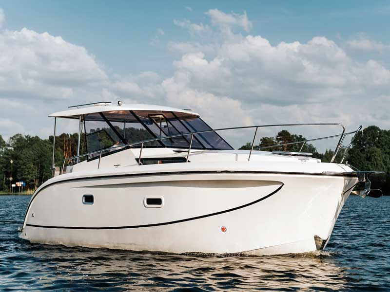
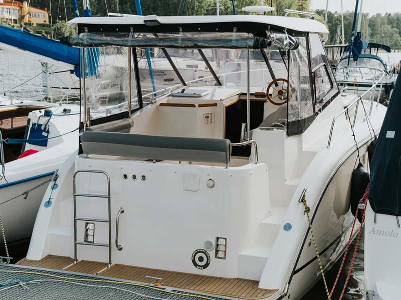

Stillo 31„Star”
- Miejsca
- 8
- Kabiny
- 3
- Zanurzenie
- 0,50 m
- Rok produkcji
- 2025
Długość całkowita9,80 m
Cena od900 zł / doba

Jacht motorowy
Futura 860 · Eufemia
Futura 860 „Eufemia” to jacht motorowy typu houseboat przeznaczony do rekreacyjnego pływania po Mazurach. Jednostka oferuje przestronną zabudowę oraz funkcjonalny układ, który sprawdza się zarówno podczas krótszych rejsów, jak i dłuższego czarteru.
Na pokładzie znajduje się wygodna sterówka oraz przestrzeń wypoczynkowa, a szeroki kadłub zapewnia stabilność podczas pływania. Konstrukcja jachtu oraz jego parametry sprawiają, że jest to jednostka odpowiednia również dla osób bez dużego doświadczenia.
Wnętrze Futury 860 zostało zaprojektowane z myślą o maksymalnym wykorzystaniu dostępnej przestrzeni.
Pod pokładem znajdują się:
• trzy zamykane kabiny,
• łazienka z toaletą morską oraz prysznicem z ciepłą wodą,
• mesa z miejscem do siedzenia,
• w pełni wyposażony kambuz.
Układ wnętrza pozwala na komfortowe funkcjonowanie maksymalnie 7 osób jednocześnie, bez względu na warunki pogodowe.
Futura 860 zapewnia stabilne i przewidywalne prowadzenie. Jednostka dobrze reaguje, a dzięki sterowi strumieniowemu manewrowanie w portach jest znacznie ułatwione.
Zastosowany silnik oraz konstrukcja kadłuba pozwalają na spokojne przemieszczanie się pomiędzy portami. Jacht, dzięki swoim ograniczeniom konstrukcyjnym, może być prowadzony bez patentu.

Cena za dobę obowiązuje przy czarterze minimum tygodniowym. Przy krótszych terminach cena ustalana jest indywidualnie.
na zapytanie
Kalendarz dostępnościTu wyświetli się kalendarz tej jednostki z systemu rezerwacji.
Wydanie jachtu 16:00 – 20:00 · zdanie 8:00 – 10:00
Dotyczy: Futura 860 „Eufemia”. Odpowiemy telefonicznie albo e-mailem.
Sprawdź dostępność i zaplanuj swój rejs już dziś.